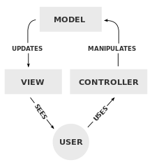

[Design Patterns]MVC维基百科译文
前言
学习前端框架的过程中，比如react或者vue，总是能听到关于MVVM MVC MVP等等这些相关的术语和内容，之前看过阮一峰的博客中一篇关于MVC介绍的文章，也在其博客上看过另外一篇关于MVC MVVM MVP之间区别的介绍的文章。尽管阮一峰一直以一种比较更直白的语言来介绍计算机相关的知识，但是这两篇文章看完，我依然充满了疑惑和不解，完全不能理解这个问题在说什么。我觉得可能这个问题的更多的解答需要我学习一门后端语言之后才能更加深刻地理解，但是目前而言，我只能非常感性的能感觉到MVC是什么意思，而不能从实际中和理性的代码中理解这个到底是什么意思。所以，为了我能更准确和明白的理解这个意思，我查看了Wikipedia的MVC字条的解释，感觉国内很多的博客内容中的图片似乎没有这篇文章中的精确，因此这里将其翻译下来。
wikipedia 原文： https://en.wikipedia.org/wiki/Model%E2%80%93view%E2%80%93controller
我翻译这篇文章的时间是2016.5.15，这个字条也许会发生变化，因此如果后来人看到的翻译和原文相差太大，可能是后期这个字条被编辑过。不过wikipedia做的很好的一点是，每一次的编辑和更改都会记录下来，因此你可以在这个字条的View history中查看我写这篇文章时候的MVC的内容。
这里就不贴原文了，大家自己打开链接查看即可。
译文
Model-View-Controller(MVC)是一种软件构建模式，用于在计算机上执行用户界面。MVC将某一指定的软件应用分为三个相互关联的部分，以便于将内部信息的展示与信息呈现给用户的方式或者来自于用户的信息的呈现方式分开。
这一构建模式，在传统中被用于桌面图形用户界面，而现在则在设计网络应用中变得非常流行。
描述
和其他软件模式类似，MVC展示了问题的核心解决方式，同时允许其被每种系统所适应。具体的MVC构建也许会与这里的传统描述相差巨大。
组件
MVC的核心组件，model，在其问题的区域捕获应用的行为，独立于用户界面。
- model直接管理应用的数据，逻辑和规则
- view可以是任何信息展示的输出，例如一张表或者一个图表。可能会有同一信息的不同视图，例如一个用于管理的柱状图或者一个用于账户的列表。
- 第三部分，controller，接收输入，然后将其转化为给model或者view的命令。
交互
除了将应用分解为3个组件之外，model-view-controller这种设计模式也定了他们三者之间的交互。
- model存储着从controller命令中取回的数据，同时也是在view中展示的数据。
- view根据model的变化，为用户生成新的输出。
- controller给model发布命令以更新model的状态（例如编辑一份文档）。controller也可以向其相关联的视图发布命令，以改变模型的视图展现（例如在文档中滑动(scrolling)）。

历史
MVC在早期图形用户界面开发中是具有开创性的远见之一，同时也是最先描述和执行软件构建方面的方法之一。
Trygve Reenskaug introduced MVC into Smalltalk-76 while visiting the Xerox Palo Alto Research Center (PARC) in the 1970s. In the 1980s, Jim Althoff and others implemented a version of MVC for the Smalltalk-80 class library. It was only later, in a 1988 article in The Journal of Object Technology (JOT), that MVC was expressed as a general concept.
The MVC pattern has subsequently evolved, giving rise to variants such as hierarchical model–view–controller (HMVC), model–view–adapter (MVA), model–view–presenter (MVP), model–view–viewmodel (MVVM), and others that adapted MVC to different contexts.
The use of the MVC pattern in web applications exploded in popularity after the introduction of Apple’s WebObjects which was originally written in Objective-C (that borrowed heavily from Smalltalk) and helped enforce MVC principles. Later, the MVC pattern became popular with Java developers when WebObjects was ported to Java. Later frameworks for Java such as Spring continued the strong bond between Java and MVC. The introduction of the frameworks Rails (for Ruby) and Django (for Python), both of which had a strong emphasis on rapid deployment, increased MVCs popularity outside the traditional enterprise environment in which it has long been popular. MVC web frameworks now hold large market shares relative to non-MVC web toolkits.
博主注：历史这部分的内容没有太大意义，未做翻译
网络应用中的使用
尽管最开始从桌面计算发展而来，model-view-controller被广泛的采用为互联网应用的架构。很多商业和非商业的网络框架被创建出来，并且加强了这个模式。这些软件框架在他们的解释中五花八门，主要不同的地方就是MVC在客户端和服务端区分的时候MVC的职责不同。
早期的网络应用采用的轻巧的客户端方式，这种方式几乎将model / view / controller的逻辑全部放在了服务器中。这种方式在比较流行的几个框架，例如Rails的Ruby，Django，ASP.NET MVC 和 Express中，依然能有所反映。通过这种方式，客户端发送超链接请求或者表单输入给controller，然后从view获取完整的并且最新的网页（或者其他文档）；model完整的存在于服务端。随着客户端技术的成熟，类似于AngularJS， EmberJS, JavaScriptMVC 和 Backbone这类的框架被创造出来，允许MVC组件在客户端执行局部内容（也可以查看Ajax）。